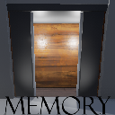
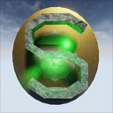
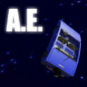

Games
Throughout my time enrolled at Stevens I have been very active in the Stevens Game Development Club. I learned multiple game engines and have made several games on my own and for club Game Jams. Here is a list of games I have been involved in.
Memory
Memory was my first place submission to SGDC's Game Jam VII. In it, the player undergoes the 'Memorysort Experiment', and goes through versions of my previous games. Along the way the experiment goes wrong, and mechanics of the various games start to get merged together.
Download here!
Maguffin

Maguffin was my first project using GameMaker: Studio. Over a week I learned the software from scratch and had a very respectable final product. This won second place in SGDC's Game Jam VI.
Download here!
Pause

Pause is my latest long-term project in Unreal Engine 4. It's a First Person Puzzle Platformer that brings the player through various physics and timing based puzzles wherein they can freeze time at the press of a button. Activate and control various physics objects and pause them in various states to make your way to the end of each level.
Download not yet released!
Spherical Saunter
Spherical Saunter was my first big project in Unreal Engine 4. It is a 3D Rolling Puzzle Platforming game, similar to games like Super Monkey Ball and the Kororinpa Marble series for Wii. I have learned many things since then, but the currently released beta has 22 normal levels, 2 secret levels, and 2 multiplayer levels.
Download the Beta here!
Impulse

Impulse was my game for SGDC's Game Jam IV. The theme was "discrete." The game is a First Person Platformer in which the user gets one and eventually two guns that launch them backwards with an energy pulse. The finished Jam game has 5 levels.
Download here!
We Guys

We Guys was made for SGDC's Game Jam III. The theme was "global." Made together with my friend Alex, We Guys is a co-op platformer inspired by I Wanna Be the Guy. Built to be horrifically difficult, we have seen pairs of players threaten all sorts of things on each other and on us upon playing it. This was a good learning experience, as it was my first foray into UE4's 2D workflow.
Download here!
Rig 'er Bigger

Rig 'er Bigger was a summer 2015 project I worked on with my friend Kevin; inspired by Big Rigs: Over the Road Racing, Rig 'er Bigger is an intentionally weird and bizarre racing game. Featuring 4 levels and up to 4 player multiplayer, this project grew much bigger than the joke it was originally intended to be.
Download here!
Aggressive Expansion
Aggressive Expansion was made for SGDC's Game Jam V. The theme was "expansion." Made together with my friend Kevin, Aggressive Expansion is a 2 player racing game completely different from everybody's favorite rocket powered vehicular soccer game. A version 1.1 was released shortly after the closing ceremony, fixing several bugs people ran into during its first play session.